Como publicar e cuidar da agenda do site
Este guia mostra, tela por tela, como cadastrar eventos, cuidar das reuniões que se repetem e conferir como tudo aparece para quem visita o site.
01Onde fica tudo
Entre no painel do WordPress do seu site. No menu da esquerda, clique em Eventos. Ali estão o calendário, a lista de eventos, o botão de novo evento e este guia, em Ajuda.
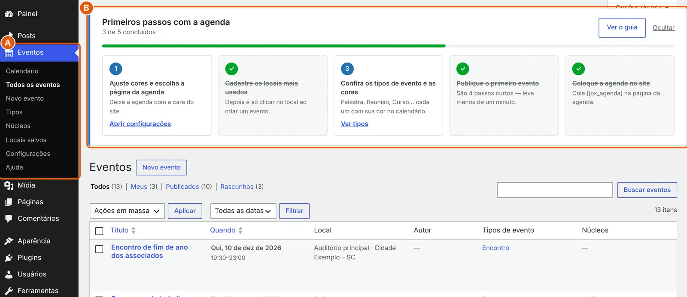
- AO menu Eventos: Calendário, Todos os eventos, Novo evento, Tipos, Núcleos, Locais salvos, Configurações e Ajuda.
- BPrimeiros passos: uma lista que aparece no começo e some sozinha quando tudo estiver pronto. Cada cartão leva direto para a tela certa.
Viu um botão ? ao lado de um campo? Clique nele para ver uma explicação curta e um link para o trecho deste guia.
02Publicar um evento em 4 passos
Clique em Eventos › Novo evento. A tela é dividida em quatro blocos numerados, na ordem em que você pensa num evento: o quê, quando, onde e como se inscrever.
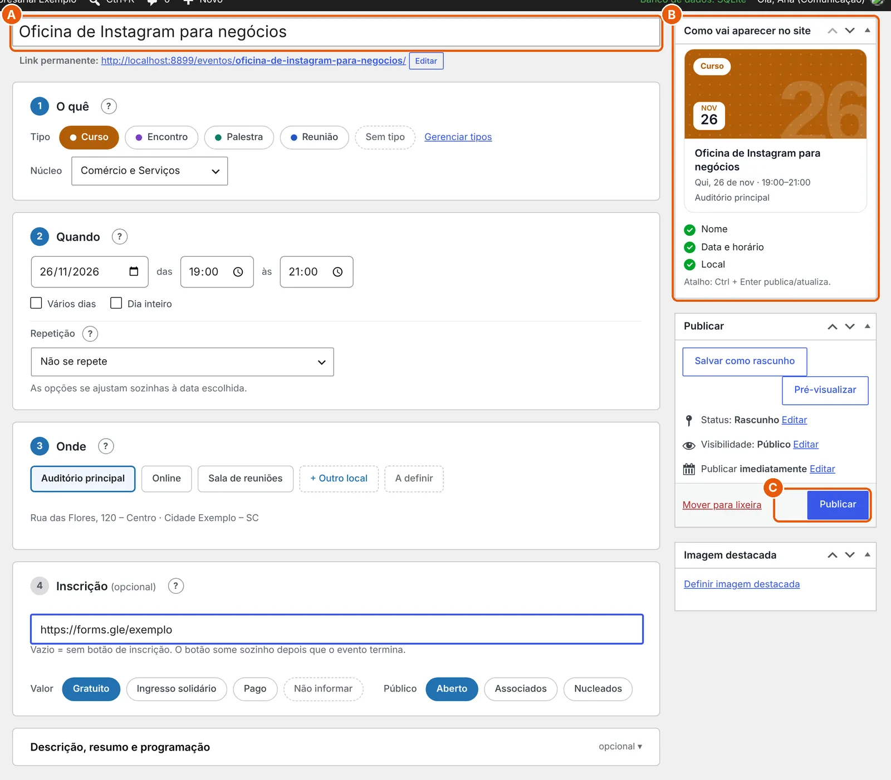
- ANome do evento, do jeito que deve aparecer no site.
- BComo vai aparecer no site: a prévia do card muda enquanto você preenche. Os três itens com ✓ mostram o que falta.
- CPublicar. O evento entra na agenda na hora. Atalho: Ctrl + Enter.
- O quê: tipo e núcleoEscolha o tipo (Palestra, Reunião, Curso, Encontro…). O tipo define a cor do evento na agenda. O núcleo é opcional e liga o evento a um grupo, que vira filtro no site.
- Quando: data e horárioEscolha a data e o horário de início. O término é preenchido sozinho com 2 horas de duração; ajuste se precisar. Se o evento se repete, veja o capítulo 3.
- Onde: um clique no localClique num dos locais salvos. O endereço aparece logo abaixo e o link do mapa é criado sozinho. Para um lugar novo, use + Outro local (veja abaixo).
- Inscrição (opcional)Cole o link do formulário (Google Forms, Sympla, WhatsApp…). O site mostra o botão Inscrever-se e o tira sozinho quando o evento termina. Marque também o valor e o público.
Um local que ainda não está salvo
Clique em + Outro local e preencha nome, endereço e cidade. Deixe marcado Salvar este local para ele aparecer como opção nos próximos eventos.
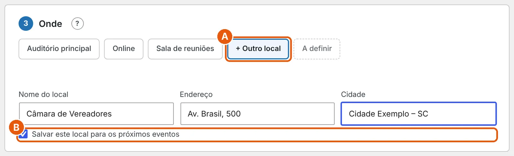
- A+ Outro local abre os campos de nome, endereço e cidade.
- BMarque para reaproveitar o local depois.
As dicas “?”
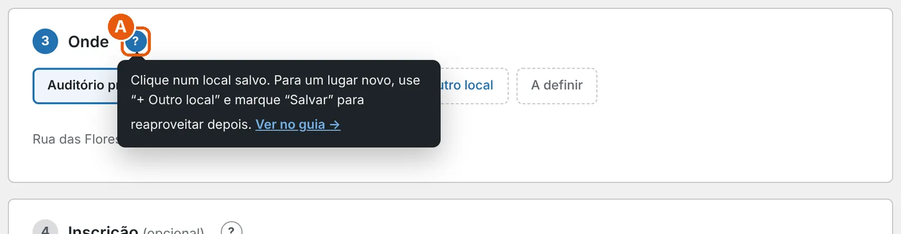
- AClique no ? para abrir a explicação. Clique fora ou aperte Esc para fechar.
03Eventos que se repetem
Reuniões de núcleo, cafés mensais, aulas semanais: cadastre uma vez só. No passo Quando, abra o campo Repetição. As opções já vêm prontas a partir da data escolhida, por exemplo “Todo mês, na última quinta-feira”.
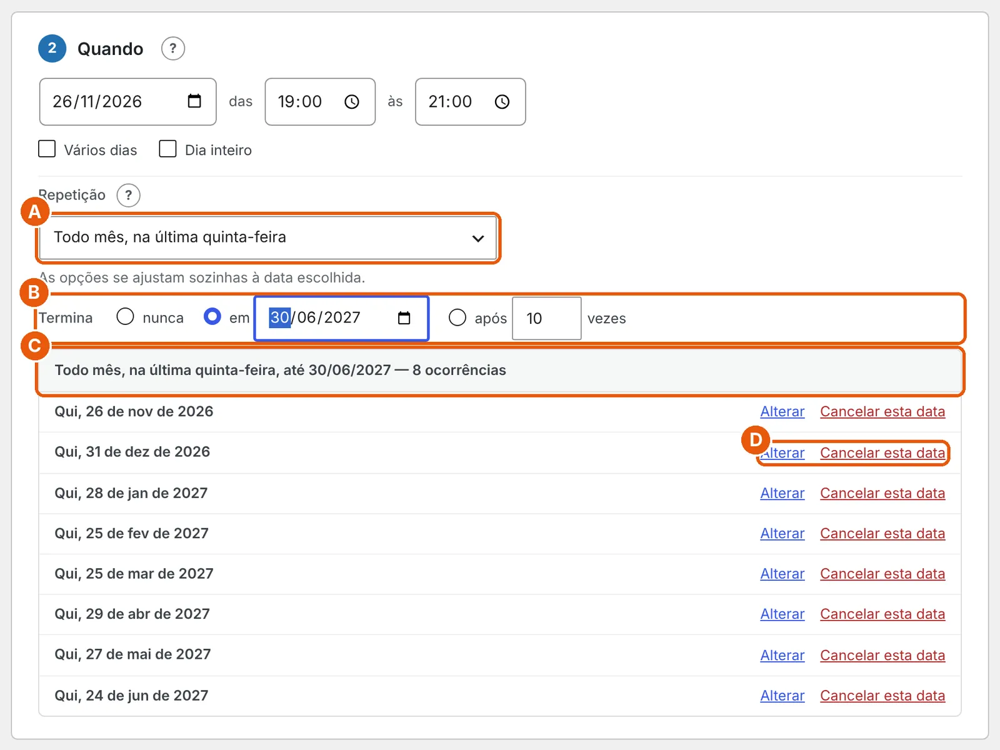
- AEscolha a repetição. Se nenhuma opção servir, use Personalizar… (a cada 2 semanas, dias específicos, dia fixo do mês).
- BTermina: nunca, numa data ou depois de um número de vezes.
- CO resumo da regra, em português, com o total de datas.
- DAs próximas datas, cada uma com Alterar e Cancelar esta data.
Cancelar ou mudar só uma data
Feriado, recesso ou encontro na empresa de um associado? Na lista de datas:
- Cancelar esta data: a data some da agenda e aparece riscada como “Cancelada” na página do evento.
- Alterar: informe outro local, outro horário ou um aviso só para aquele dia.
- Restaurar desfaz a mudança.
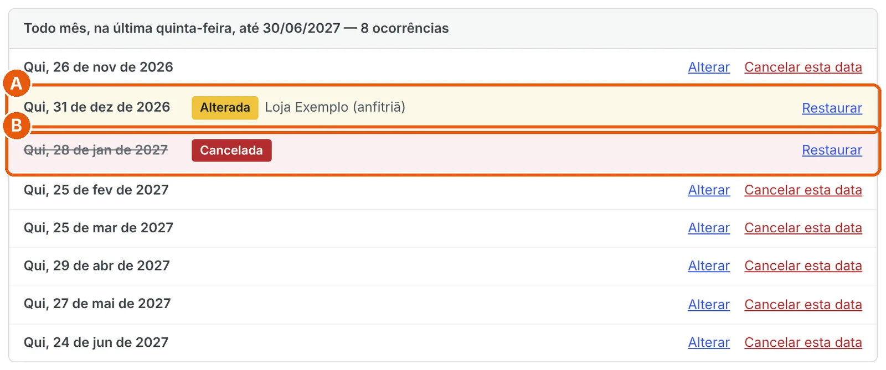
- AData com local diferente. No site aparece o aviso “nesta data o encontro será em…”.
- BData cancelada. As outras continuam normais.
As mudanças nas datas só valem depois que você salva o evento.
04Vários dias e dia inteiro
Cursos de três noites, feiras e congressos: marque Vários dias e escolha a data final. No calendário do site o evento aparece em cada dia, como “1/3”, “2/3” e “3/3”. Marque Dia inteiro quando não houver horário definido.
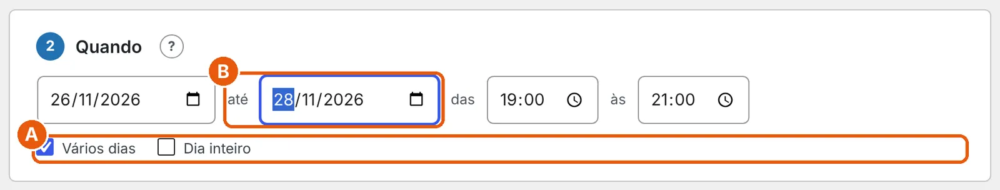
- AAs duas opções.
- BA data final aparece quando “Vários dias” está marcado.
05Descrição, resumo, programação e imagem
No fim da tela, abra Descrição, resumo e programação. Tudo ali é opcional, mas deixa a página do evento mais completa.
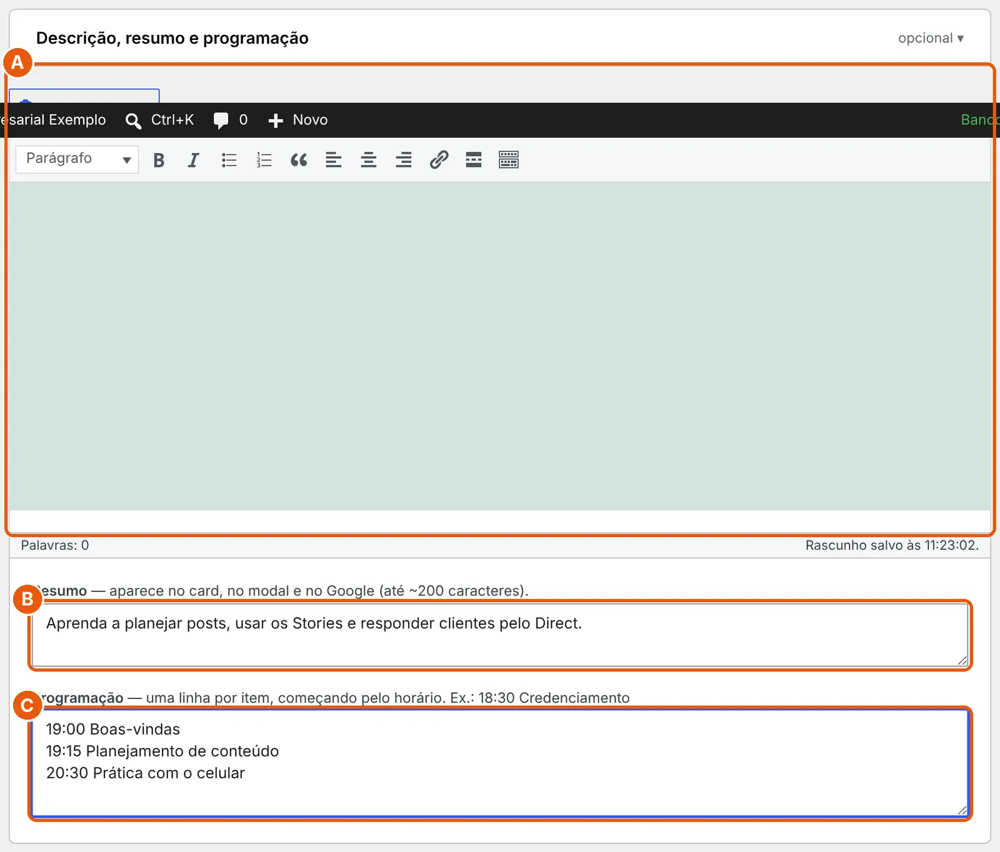
- ADescrição completa: texto livre, com negrito, listas e links.
- BResumo: uma ou duas frases. Aparece no card, no modal do calendário e no Google.
- CProgramação: uma linha por item, começando pelo horário (ex.:
18:30 Credenciamento).
Imagem: use o quadro Imagem destacada, na coluna da direita. Sem imagem, o site gera uma capa com a cor do tipo e o dia do evento, então nenhum evento fica “sem foto”.
06Criar e mover pelo calendário
Em Eventos › Calendário você vê o mês inteiro. É o jeito mais rápido de cadastrar.
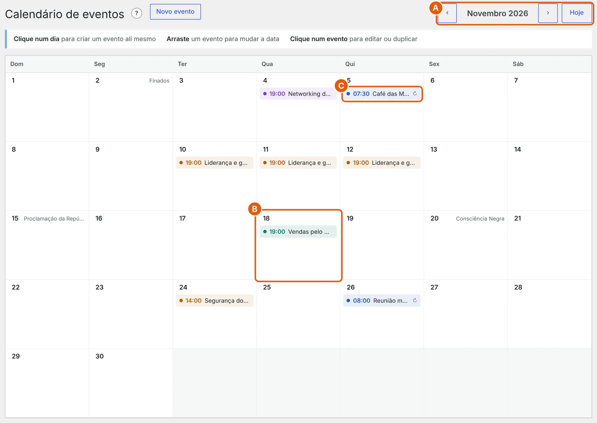
- AMês anterior, próximo mês e Hoje.
- BClique num espaço vazio do dia para criar um evento ali.
- CClique num evento para editar, duplicar ou ver no site. O símbolo ↻ indica evento recorrente.
Criação rápida
- Clique no diaAbre um quadrinho já com a data certa.
- Digite o nomeHorário, tipo, local e repetição são opcionais.
- Aperte EnterO evento é publicado e aparece no calendário na hora.
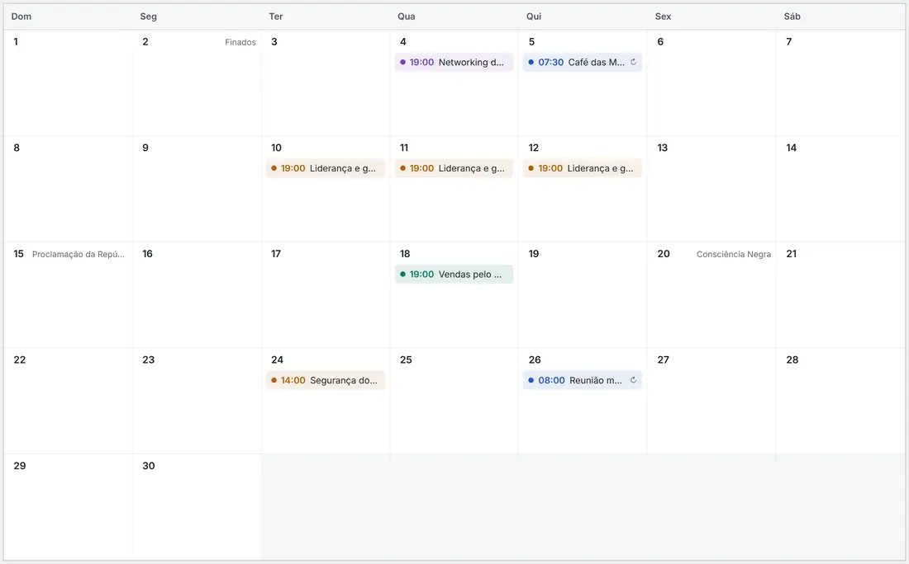
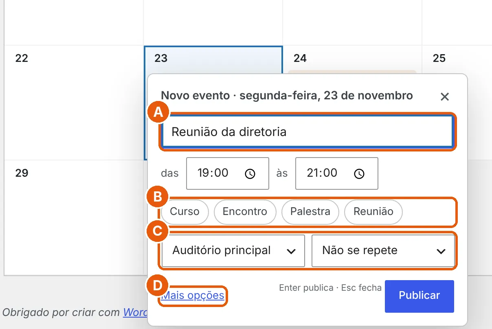
- ANome do evento.
- BTipo (define a cor).
- CLocal e repetição.
- DMais opções abre a tela completa com a data já preenchida.
Arrastar para mudar a data
O evento mudou de dia? Arraste-o até a nova data. O horário e a duração continuam iguais.
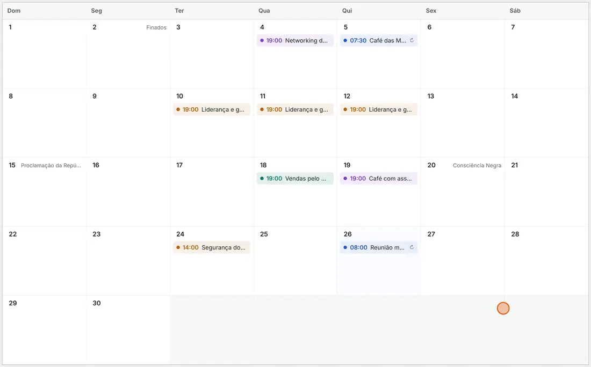
Eles não são arrastados, para não bagunçar a série. Para mudar só uma data, use Alterar na tela do evento (capítulo 3).
07Duplicar, rascunho e agendar
Evento parecido com um anterior? Em Todos os eventos, passe o mouse sobre ele e clique em Duplicar. Abre uma cópia em rascunho: troque a data e publique.
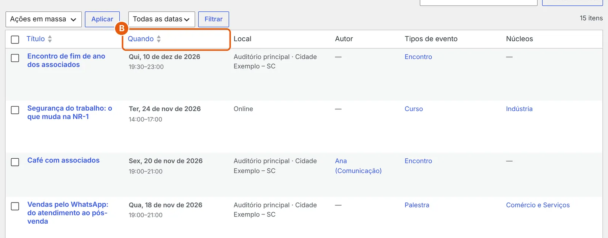
- ADuplicar aparece junto de Editar e Lixeira.
- BA coluna Quando mostra a data do evento (e a próxima, nos recorrentes). Clique no título da coluna para ordenar.
- Salvar como rascunho guarda sem publicar. No calendário do painel o rascunho aparece listrado.
- Agendar: no quadro Publicar, clique em Editar ao lado de “Publicar imediatamente” e escolha dia e hora. O evento entra no site sozinho.
- Evento que já passou não precisa ser apagado: ele vai para a aba Anteriores da agenda.
08Locais, tipos e núcleos
São as listas que deixam o cadastro rápido. Arrume uma vez e use sempre.
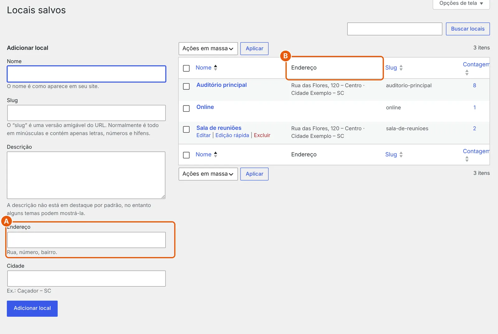
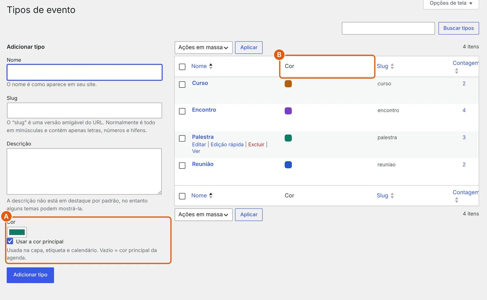
Assim o visitante reconhece o tipo de evento no calendário só de bater o olho. O site escurece a cor sozinho quando precisa, para o texto continuar legível.
09O que o visitante vê
A agenda do site tem duas formas de ver, busca e filtros. Tudo funciona sem recarregar a página.
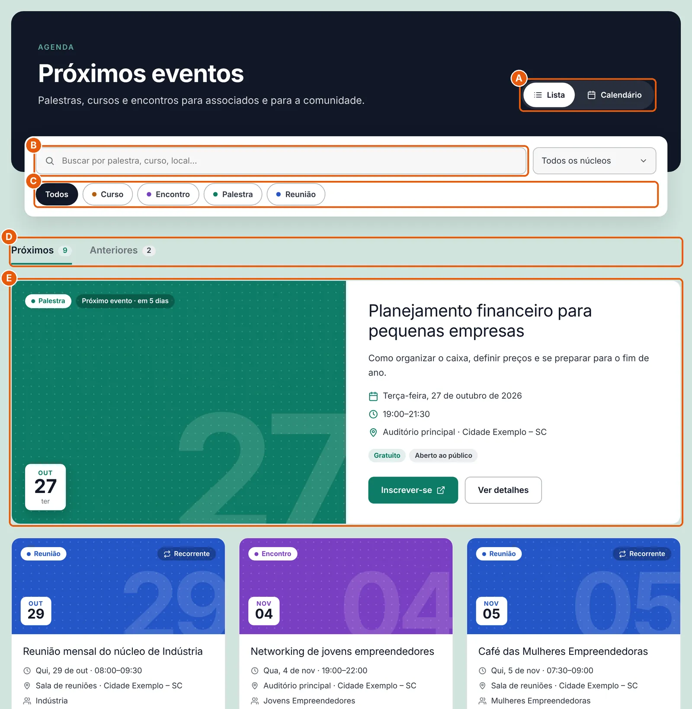
- ALista ou Calendário.
- BBusca por nome, local ou assunto.
- CFiltro por tipo (e por núcleo, ao lado da busca).
- DPróximos e Anteriores, com a quantidade de cada.
- EO próximo evento ganha destaque, com contagem de dias e botão de inscrição.
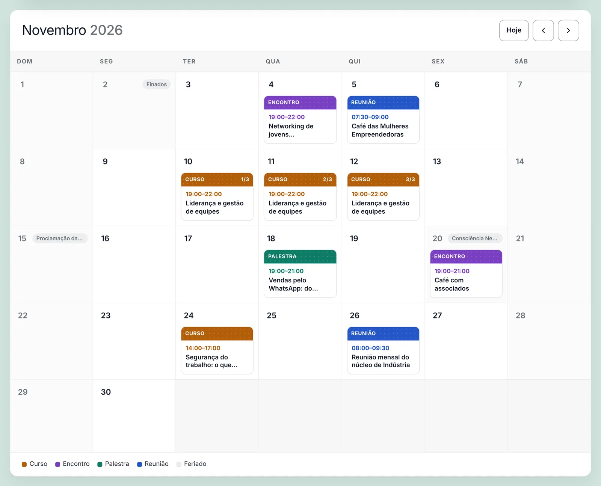
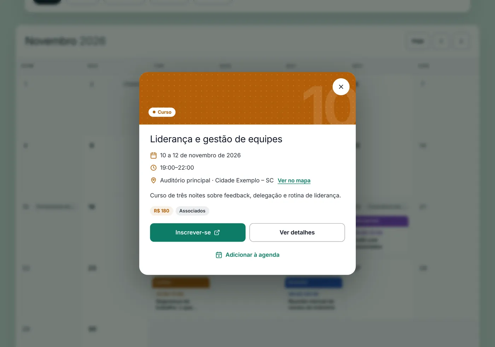
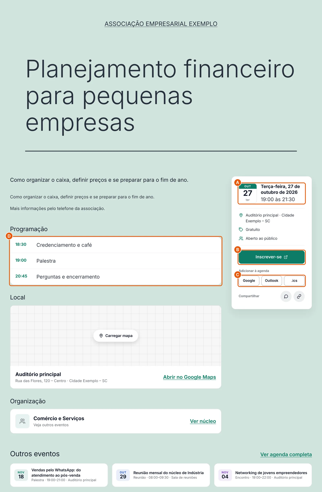
- AData e horário sempre visíveis ao lado do texto.
- BBotão Inscrever-se, com o link do passo 4.
- CAdicionar ao Google Agenda, Outlook ou celular (.ics).
- DA programação, linha por linha.
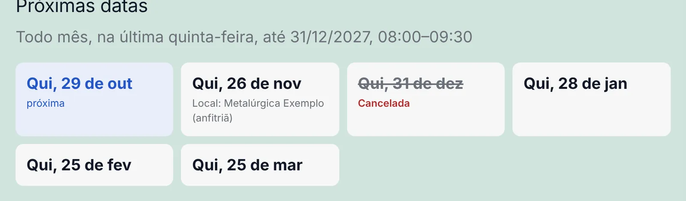
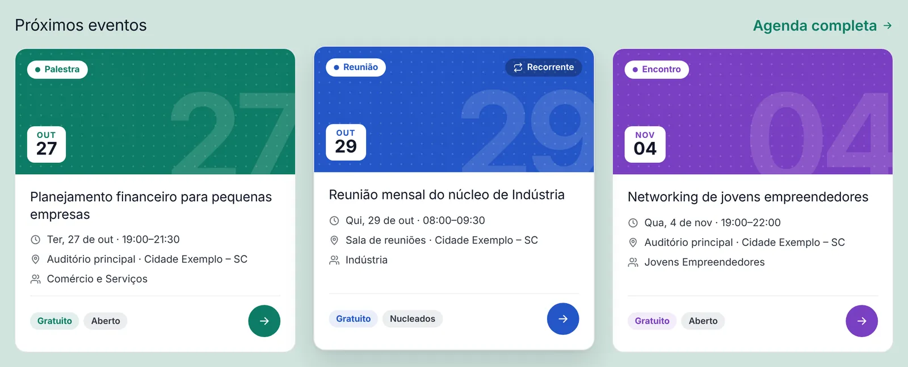
No celular
O calendário vira uma lista por dia, mais fácil de ler na tela pequena.
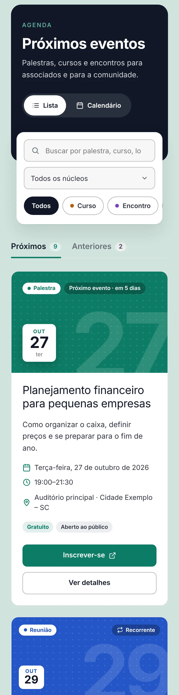
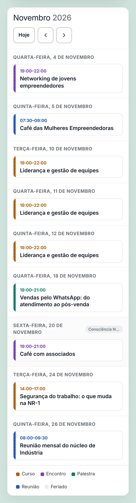
Colocar a agenda numa página
Edite a página Agenda do site e cole o código abaixo onde a agenda deve aparecer (num bloco de texto ou “Código curto”):
[jpx_agenda]
Para a página inicial, use [jpx_eventos quantidade="4"]. Mais opções estão em Para a agência.
10Configurações
Em Eventos › Configurações ficam as cores, a página da agenda e o local que já vem marcado em todo evento novo.
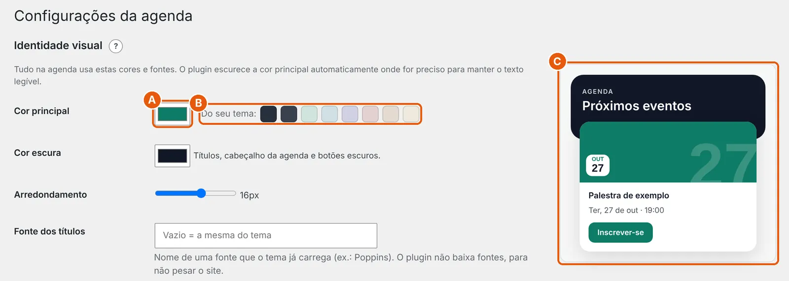
- ACor principal: botões, destaques e o tipo “Palestra”.
- BDo seu tema: clique num quadradinho para usar uma cor que o site já tem.
- CA prévia muda enquanto você escolhe. Clique em Salvar alterações no fim da página.
- Página da agenda: para onde levam os links “Agenda completa”.
- Local padrão: economiza um clique em todo evento novo.
- Feriados: mostra ou esconde os feriados nacionais no calendário.
11Perguntas frequentes
Publiquei e o evento não aparece no site.
Confira três coisas: o evento está Publicado (não em rascunho), a data é de hoje em diante (eventos passados ficam em Anteriores) e o filtro da agenda está em “Todos”. Se o site usa cache, a página pode levar alguns minutos para atualizar.
Como mudo o horário de uma reunião só neste mês?
Abra o evento, vá em Repetição, clique em Alterar na data, informe o novo horário e clique em Atualizar.
Preciso apagar os eventos que já aconteceram?
Não. Eles vão sozinhos para a aba Anteriores e continuam úteis para quem procura o histórico.
O botão de inscrição sumiu.
Ele some quando o evento termina, ou quando o campo de link de inscrição está vazio.
Errei o local em vários eventos.
Se o local é um dos salvos, corrija em Eventos › Locais salvos: todos os eventos com aquele local se atualizam de uma vez.
Posso deixar alguém da equipe só cadastrando eventos?
Sim. Um usuário com perfil Editor ou Autor no WordPress consegue cadastrar e publicar eventos. Peça à agência para criar o acesso.
Como o associado coloca a agenda no celular dele?
Na página de cada evento há “Adicionar à agenda”. Para assinar a agenda inteira, envie o link que fica em Configurações › Shortcodes (termina em ?jpx_ics=agenda).
+Para a agência: implantação
- Instale o pluginPlugins › Adicionar novo › Enviar plugin ›
jpx-eventos.zip› Ativar. Se o site tinha o “Eventos JPX” antigo, ele é desativado sozinho e os eventos são aproveitados, com cópia de segurança. - IdentidadeEm Configurações, defina as cores (os quadradinhos “Do seu tema” ajudam) e, se quiser, as fontes que o tema já carrega.
- ListasCadastre os locais, revise os tipos e as cores e crie os núcleos (o nome “Núcleo” pode virar “Comissão” ou “Setor” nas Configurações).
- PáginasColoque
[jpx_agenda]na página da agenda e escolha essa página em Configurações. Na home, use[jpx_eventos]. - Construtores (Divi, Elementor)Se a página do evento for um template do construtor, use
[jpx_evento]nele e marque Página do evento: Manual. Caso contrário, deixe em Automática.
| Código | O que faz | Opções úteis |
|---|---|---|
[jpx_agenda] | Agenda completa: lista, calendário, busca e filtros. | cabecalho="nao" titulo="…" descricao="…" visao="calendario" tipo="slug" nucleo="slug" |
[jpx_calendario] | Só o calendário mensal. | tipo nucleo filtros="sim" |
[jpx_eventos] | Próximos eventos em cards ou lista (home, núcleos). | quantidade="4" layout="compacto" nucleo="slug" agrupar="nao" se_vazio="mensagem" |
[jpx_evento] | Página do evento completa para templates. | id="123" |
[lista_eventos] [eventos_home] [evento_detalhe] | Códigos da versão 1.x, que continuam funcionando. | — |
JPX Eventos · Jotapix Agência Criativa · Guia da versão 2.1